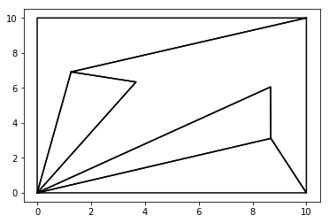

Imports¶
In [1]:
import matplotlib.pyplot as plt
import logging
logging.basicConfig(level=logging.INFO)
In [2]:
import drawing
from kirkpatrick import Kirkpatrick, time_tests
from polygons import Point, Polygon, Triangle
from polygons import generate_random_tiling
from polygons import generate_triangle_tiling
%load_ext autoreload
%autoreload 2
%autoreload
%matplotlib inline
Make a tiling¶
You can generate a random tiling via the polygons library¶
In [3]:
n_tiles = 20
size = 100
# Start with a square and construct the tiling inside
base = Polygon([Point(0, 0), Point(size, 0), Point(size, size), Point(0, size)])
# Iteratively split the polygon randomly 4 times to make tiles
random_tiles = generate_random_tiling(base, n_iter=n_tiles - 1)
drawing.plot_polygons(random_tiles, 'k-')
In [4]:
n_pts = 100
size = 1000
triangles = generate_triangle_tiling(num_pts=n_pts, size=size)
drawing.plot_polygons(triangles, 'k-')
Or you can declare your own¶
In [5]:
manual_tiles = [
Polygon([
Point(8.681595, 3.113523), Point(10.000000, 0.000000), Point(10.000000, 10.000000),
Point(1.258842, 6.913277), Point(3.670703, 6.336320), Point(0.000000, 0.000000),
Point(8.668625, 6.053702)
]),
Polygon([
Point(10.000000, 10.000000), Point(0.000000, 10.000000), Point(0.000000, 0.000000),
Point(1.258842, 6.913277)
]),
Polygon([
Point(1.258842, 6.913277), Point(0.000000, 0.000000), Point(3.670703, 6.336320)
]),
Polygon([
Point(0.000000, 0.000000), Point(8.681595, 3.113523), Point(8.668625, 6.053702)
]),
Polygon([
Point(0.000000, 0.000000), Point(10.000000, 0.000000), Point(8.681595, 3.113523)
])
]
drawing.plot_polygons(manual_tiles, 'k-')

Instantiate the Point Locator¶
In [6]:
locator = Kirkpatrick(random_tiles)
Make queries¶
A valid query point will return the polygon containing it¶
In [9]:
valid_query_point = Point.sample_square(100)
located_tile = locator.locate(valid_query_point)
print(valid_query_point)
print(located_tile)
drawing.plot_polygons(random_tiles, 'k-')
drawing.plot_polygon(located_tile, 'ro-')
drawing.plot_point(valid_query_point)
Point(44.201672, 86.784118)
Polygon([Point(39.702057, 87.483149), Point(46.549990, 65.406031), Point(83.414977, 89.990358), Point(23.146493, 37.626745), Point(100.000000, 100.000000), Point(0.000000, 100.000000), Point(34.527252, 97.077647), Point(50.067464, 97.763502)])
A query point outside the tiling will return None¶
In [12]:
false_query_point = Point(100 / 2, 100 * 1.1)
located_tile = locator.locate(false_query_point)
drawing.plot_polygons(random_tiles, 'k-')
drawing.plot_polygon(located_tile, 'ro-')
drawing.plot_point(false_query_point)
Even more visuals!¶
You have the power to even plot the algorithm as it runs! The layers are saved in “layer%d.png”, and the search layers are saved in “search_layer%d.png”. Observe the following examples:
In [14]:
locator = Kirkpatrick(manual_tiles, plot_layers=True)
<matplotlib.figure.Figure at 0x10623f518>
In [17]:
valid_query_point = Point.sample_square(10)
tile = locator.locate(valid_query_point, plot_search=True)
drawing.plot_polygons(manual_tiles, 'k-')
drawing.plot_polygon(tile, 'r-')
drawing.plot_point(valid_query_point)
Timing¶
Verfiying that the query time is logarithmic seems to be quite difficult. There is a method in polygons to generate triangular tilings of reasonable size, but the amount of time taken to generate these tilings is much greater than the time to construct the Kirkpatrick object, or to locate the point. Nevertheless, you can try it out yourself.
In [8]:
data_pts = time_tests(min_pts=100, max_pts=10000, inc=1000)
drawing.plot_points(data_pts)
INFO:root:Running timing tests on point location